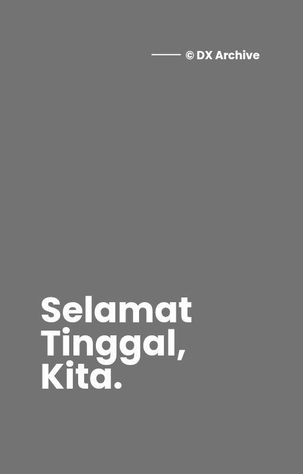

Selamat Tinggal, Kita
A story about loss, memories, unfinished conversations, and learning how to let go of someone who once felt like home.
Preview
Chapter 1: Apa Kabar, Orang Asing?
Hai, apa kabar?
Sudah tiga bulan sejak kita berhenti menjalani rutinitas yang dulu terasa begitu biasa. Tiga bulan sejak semuanya mendadak berubah menjadi asing. Dan sampai hari ini, aku masih sering berharap bahwa semua yang terjadi hanyalah mimpi buruk—bahwa sebenarnya kamu tidak benar-benar pergi meninggalkanku.
Aku masih menunggu.
Menunggu bunyi notifikasi favorit itu terdengar lagi di ponselku. Menunggu namamu muncul lagi seperti dulu. Menunggu hal kecil yang dulu terasa biasa, tapi sekarang justru paling kurindukan.
Sejujurnya, akhir-akhir ini kenangan tentangmu sudah mulai jarang datang. Wajahmu tidak lagi sesering dulu memenuhi kepalaku. Namamu pun perlahan semakin jarang kusebut dalam doa.
Aku sempat berpikir bahwa akhirnya aku berhasil melupakanmu—bahwa aku sudah benar-benar move on.
Ternyata aku salah.
Read the Full Book
Selamat Tinggal, Kita. will be available soon on the following platforms.